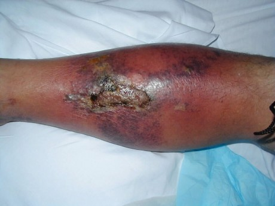
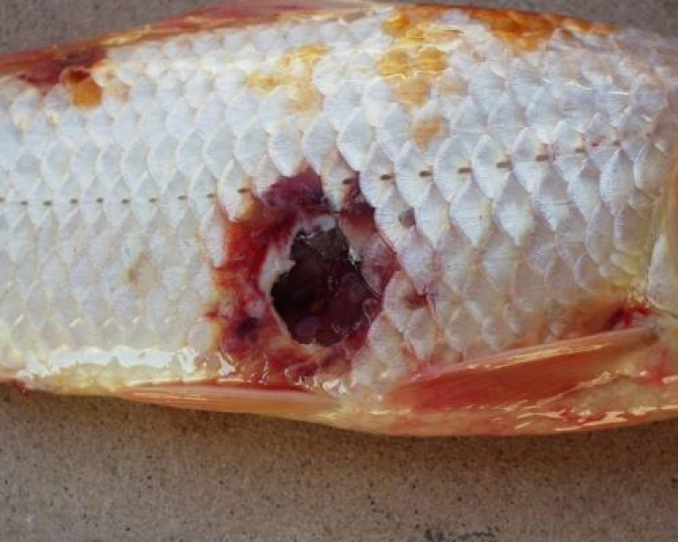

Aeromonas
Did you know that...
Aeromonas hydrophila is a species of gram-negative bacteria. These organisms are oxidase-positive and anaerobic. Aeromonas hydrophila is a member of the family Aeromonadaceae, and is only one of six species Aeromonas species that are known to be pathogenic in humans. It is also pathogenic in fish.
Aeromonas hydrophila are rod-shaped and have polar flagella. The toxicity of this species comes from its strucure. For example, one important cell component is an aerolysin-related cytotoxic enterotoxin (Act) gene. This has the ability to lyse red blood cells as well as causing tissue damage.
Aeromonas hydrophila can be found in aquatic environments as well as in food, and can be found worldwide. It can cause both intestinal and nonintestinal infections in humans, and can often be fatal. Some of the diseases that Aeromonas hydrophilia and other Aeromonas species can cause include: septicemia, meningitis, pneumonia, and gastroenteritis. There are many factors influencing the toxicity of Aeromonas hydrophila. For example, this species is able to resist complement-mediated lysis. It has been suggested that Aeromonas hydrophila causes human diarrhea, but this has not yet been verfied.
Additional Information
Diseases
Disease in Humans
Aeromonas hydrophila is also pathogenic to humans. It causes gastroenteritis which can affect anyone, but it most occurs in young children and people who have compromised immune systems or growth problems [12, 13]. This bacterium is linked to two types of gastroenteritis. The first type is a disease similar to cholera which causes rice- water diarrhea. Mild symptoms include fever and chills, but patients who become overwhelming bacterial infection with Aeromonas hydrophila often exhibit abdominal pain, nausea, vomiting, and diarrhea [1, 23]. The other type of disease is dysenteric gastroenteritis that causes loose stools filled with blood and mucus. Dysenteric gastroenteritis is the most severe out of the two types, and can last for multiple weeks. Aeromonas hydrophila is also associated with cellulitis, an infection that causes inflammation in the skin tissue. It also causes diseases such as myonecrosis and eczema in people with compromised immune systems.

Disease in Fish and Amphibians
Aeromonas hydrophila cause illness mainly in fish and amphibians because this bacterium lives in aquatic environments. It is related to a disease found in frogs called red leg that causes internal or fatal hemorrhage. When infected with Aeromonas hydrophila, fish develop ulcers, fin rot, tail rot, and hemorrhagic septicaemia [12, 13]. Specially, hemorrhagic septicaemia causes lesions that lead to scale shedding, hemorrhages in the gills and anal area, ulcers, exophthalmia, and abdominal swelling.
Back